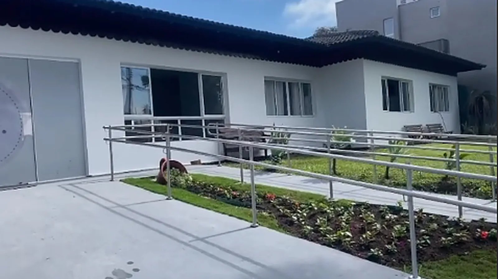
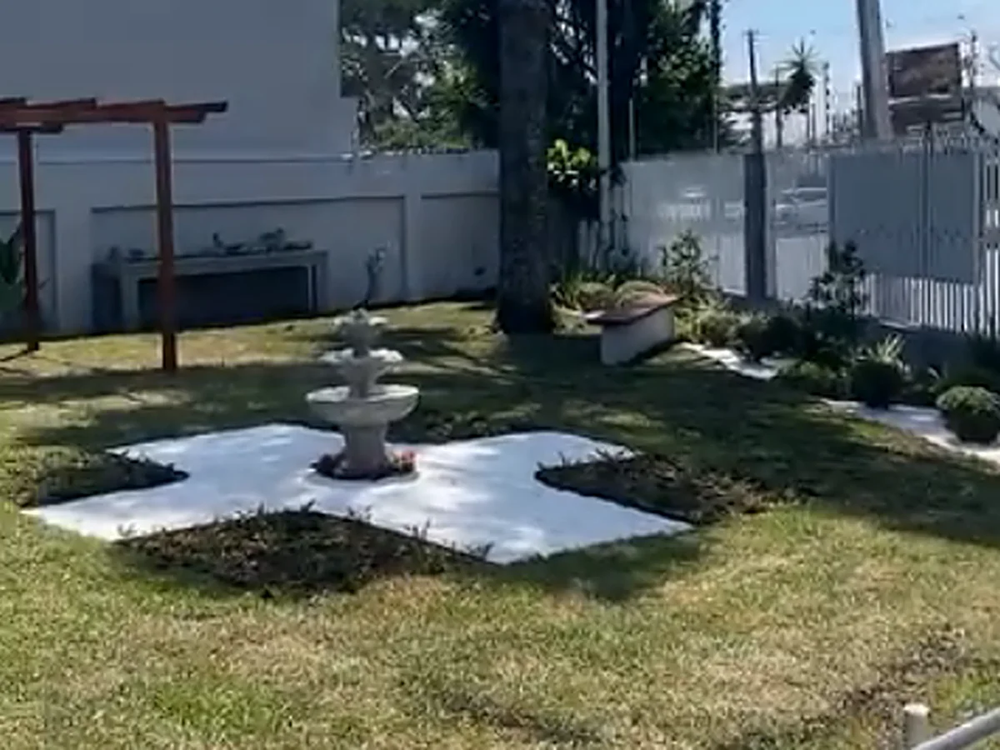
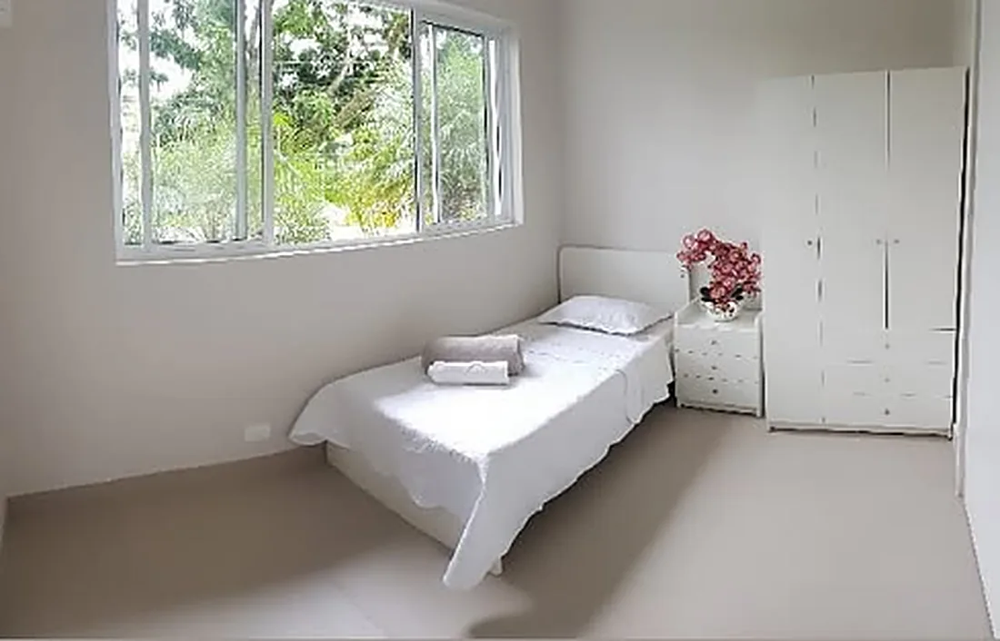
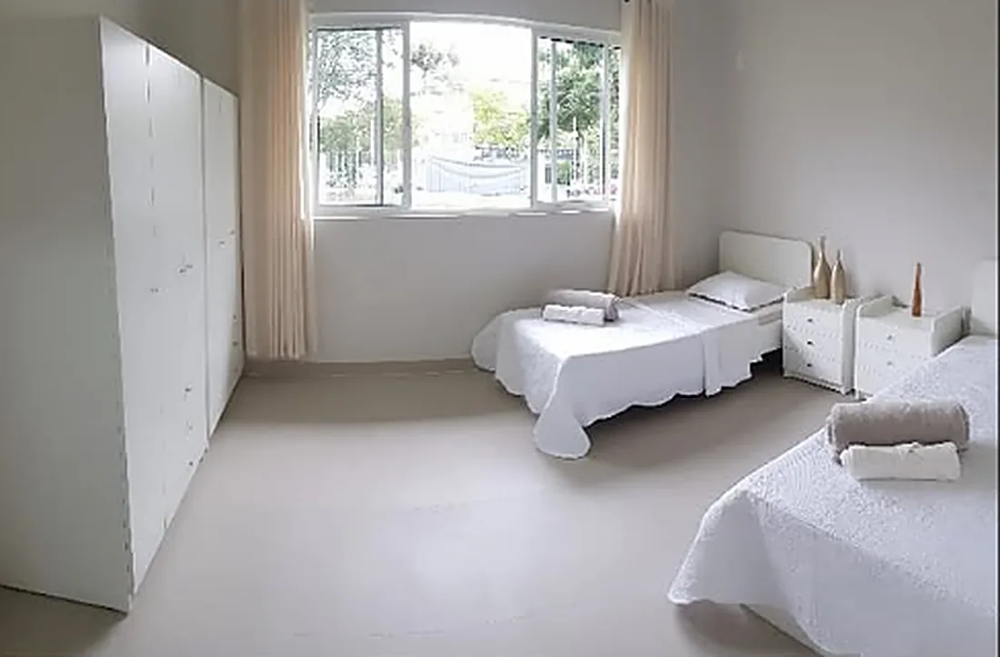
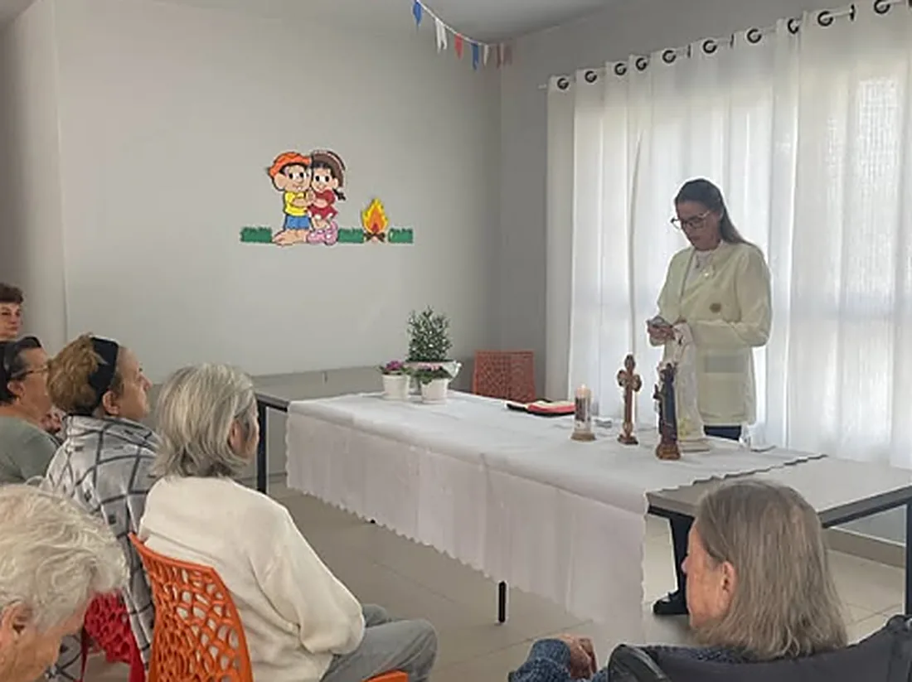

Longa permanência
Moradia definitiva, com acompanhamento contínuo, hotelaria completa e vida em comunidade.

A Laguna House é uma casa de repouso conduzida por enfermeiras, térrea e com jardim, onde cada moradora tem acompanhamento profissional 24 horas e um dia a dia com rotina, companhia e afeto.
A Laguna House nasceu do trabalho de três enfermeiras que passaram a vida cuidando e quiseram fazer isso do jeito em que acreditam: em uma casa térrea, sem escadas e sem corredores intermináveis, onde é possível conhecer cada moradora pelo nome e saber como ela gosta de começar o dia.
O endereço fica no Jardim Social, em uma rua tranquila de Curitiba. A estrutura é preparada para a terceira idade, com rampas, banheiros adaptados e monitoramento, mas o que se vê ao entrar é uma casa clara, com jardim, plantas e sol entrando pelas janelas.

Nem toda família procura a mesma coisa. Algumas precisam de uma moradia definitiva, outras de um período curto de recuperação ou de um lugar seguro durante o dia.
Moradia definitiva, com acompanhamento contínuo, hotelaria completa e vida em comunidade.
Hospedagem por temporadas, para viagens da família, reformas em casa ou períodos de transição.
A idosa passa o dia na casa, com atividades e refeições, e volta para a família à noite.
Recuperação após cirurgias ou internações, com enfermagem por perto o tempo todo.
Quartos claros, áreas comuns para as refeições e as celebrações, e um jardim que é o coração da casa.




A rotina é o que sustenta o bem-estar na terceira idade. Aqui o dia tem horário para acordar, para as refeições, para o banho de sol e para as atividades, e isso ajuda a manter memória, humor e autonomia.
Avaliações publicadas no Google por famílias de moradoras. Toque ou clique em qualquer uma para ver o original.
Esta residência que escolhemos para nossa mãe morar e se sentir em casa, com ambiente claro, ensolarado e com espaço adequado, assim tendo a qualidade de vida que ela merece. Alem disto, a prioridade é o atendimento, que realizam com muito carinho e atenção individualizada. Agradecemos o comprometimento com nossa mãe, em especial a cuidadora Jaqueline, que está lá desde o inicio e apoia muito às famílias
Ambiente acolhedor, limpo, arejado, cuidadoras atenciosas de prontidão, várias atividades. Minha mãe está sendo muito bem cuidada!! Só gratidão e muita luz para nova direção!!!
Lugar agradável, com profissionais e gestão de excelência qualidade e com amor e carinho naquilo que faz, indico pra moradia.
A visita é o melhor jeito de decidir. Marque um horário e conheça a casa, os quartos, o jardim e a equipe que vai receber a sua mãe ou a sua avó.